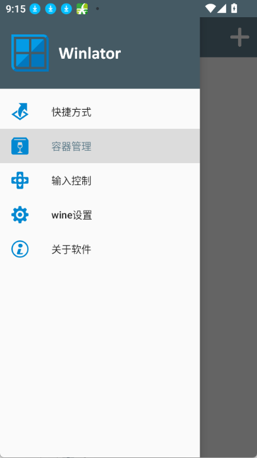
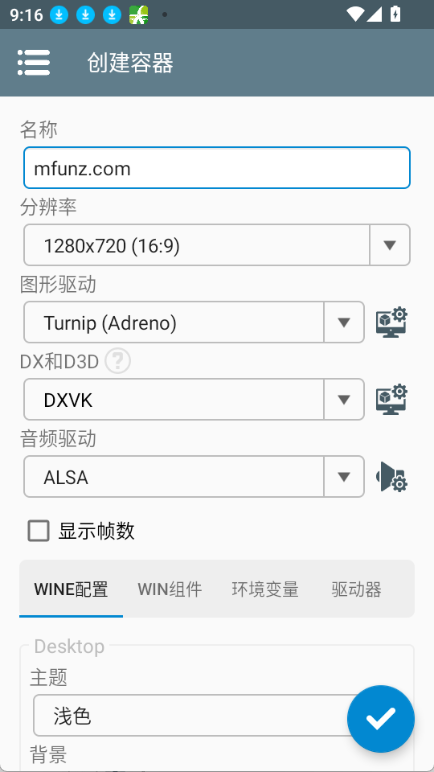

Winlator 到底值不值得掏钱？把这笔账算明白
Winlator 让安卓跑 Windows 游戏这件事，免费版够不够用、有没有必要为它付费、不同使用强度的人各自要花多少时间成本，这里一笔笔算清楚。
安卓手机跑 Windows 游戏，这件事从模拟器时代就有人在折腾。Winlator 不是第一个做的，但它可能是当前体验最接近"开箱就能玩"的那一个——去它的Winlator官网看看社区活跃度就知道。问题来了——它到底值不值得你掏钱？
先说明白一件事：Winlator 本身是免费的开源项目，没有订阅费，也没有买断门槛。但"免费"不代表"零成本"，你花在调容器、换预设、查闪退原因的时间，就是这笔账里最容易被忽略的那一行。下面我从三个维度拆解。
定价拆解：免费版到底给了什么
从官方仓库和社区文档能看到的边界是这样的：
- 核心引擎全开放：Box86/Box64 翻译层、Wine 兼容层、DXVK/VKD3D 转译这些都是开源组件，谁都能拉下来自己编译，官方也直接在应用里给了版本管理和在线更新。
- 容器机制全免费：创建容器、切换 Windows 版本、调整分辨率、装运行库——这些核心功能一个子都不要。容器数量也没上限，你想给每个游戏单独建一个都行。
- 快捷方式和虚拟按键：主界面一键启动、每个游戏独立的按键布局，这些提升体验的功能也都在免费版里。
那有没有付费版？目前官方没有推出过付费订阅或 Pro 版。社区里有第三方维护的修改版加了广告或赞助通道，但那不是官方的路子。所以严格说，Winlator 不存在"免费版给 A、付费版多给 B"的对比结构——它就是一个免费工具，你要付的成本全是时间成本。
但这恰恰是很多人踩坑的地方：以为软件免费就等于成本为零，结果花了好几个晚上调预设还跑不动一个游戏。接下来算时间账。

算账：三类人的时间成本对比
我把用户按使用强度分三档，各自算一笔"每小时可玩内容的前置时间投入"。
轻度用户：偶尔想玩个老游戏
典型场景：手里压着几个 2010 年以前的 RPG（《辐射3》《上古卷轴5》那辈），PC 已经落灰了，想在通勤碎片时间摸两把。
前置投入：先从Winlator下载把应用装上，然后建容器 + 装游戏 + 调一次预设，大概 30 分钟。因为 DX9 老游戏是兼容性最稳的一档，直接用 Compatibility 预设起步，大概率一次成功。如果闪退，排查范围也小——缺 VC++ 运行库或者文件没下完整，对着Winlator文档里的闪退排查表逐条对，15 分钟内能锁定原因。
长期成本：每加一个老游戏，前置时间 20~30 分钟。假设一个游戏玩 10 小时，前置成本摊到每小时就是 2~3 分钟。
结论：免费版完全够用。这点时间成本跟你找资源、下安装包的功夫差不多，算在正常折腾范围内。
主力用户：想认真玩一批 DX10/11 游戏
典型场景：手机是骁龙 8 Gen 2 及以上，想把《巫师2》《地铁》这类中大型 3D 游戏搬上去，期望 30+ 帧可玩。
前置投入：这一档开始麻烦了。DX11 游戏要过 DXVK 转译，默认 Compatibility 预设可能帧数只有 15~20，要切到 Intermediate 甚至 Performance 才能上去。但 Performance 预设容易崩，你得在 Stability 和 Performance 之间反复试，可能花 1~2 小时才能找到某个游戏的"甜点档"。分辨率也得试——800×600 流畅但糊，1280×720 清晰但掉帧，每个游戏都要单独测。
长期成本：每个新游戏的调优时间上升到 1~2 小时。而且这个成本是持续性的——系统更新、Winlator 版本升级、甚至手机温度变化都可能让之前稳的配置突然崩掉，你得重新调。
有没有"付费解法"？ 目前没有官方付费通道，但社区里有玩家整理好的"调优配方包"——把某个游戏的最优预设、环境变量、驱动版本打包分享。这些配方大多免费，但也有少数付费解锁的付费社群在卖。如果你不想花时间调，花几十块买一份配方合集是目前最接近"付费省时间"的路子。
重度用户：想把手机当 PC 替代品
典型场景：手机 + 手柄 + 显示器，想跑办公软件、开发工具，甚至轻度联网游戏。
前置投入：这档基本踩在兼容性边界上。.NET 程序要装 Wine Mono，商业软件可能卡加密狗，DX12 游戏能启动就算运气好。你得对 Wine 体系有相当的了解——知道怎么挂环境变量、怎么改注册表、怎么处理中文路径问题。前置投入 4~6 小时起步，而且很多问题查不到现成答案，要自己翻英文社区。
长期成本：极高。每新增一个程序都可能遇到新问题，没有配方可抄。而且这个档位的需求会逼着你去理解 Box64 翻译器的开关细节——普通玩家用四档内置预设就够了，重度用户要进自定义预设页面逐项调数值。
结论：不建议。手机当 PC 替代品这条路，转译层的开销在那里摆着，投入产出比极低。真有这需求不如搞个云电脑或者本地串流。

替代方案：不花这笔时间还有什么路
如果你看完上面的账觉得时间成本还是太高，还有几条路可以走：
同类免费工具：Termux + Proot + Wine 这条路是更轻量的替代，但纯命令行界面，门槛比 Winlator 高出一大截。适合对 Linux 命令行熟的玩家，普通人直接放弃。
云游戏：像 Xbox Cloud Gaming、GeForce Now 这类服务，按月订阅，不用调任何东西，打开就玩。缺点是你玩的是平台有的游戏，不是你自己那堆散装老游戏。而且订阅费长期来看并不便宜——按月 30 块的话，一年 360，重度调 Winlator 的时间成本折算成时薪可能还不到这个数。
PC 串流：手机当显示器 + 手柄，PC 还是主力。体验最接近原生，但需要一台常开的 PC 和稳定的 Wi-Fi。
结论：哪类人闭眼冲，哪类人再等等
给你一个三秒钟的对号入座表：
| 你的情况 | 决策 |
|---|---|
| 只想玩几个 DX9 老 RPG，PC 落灰了 | 闭眼冲。30 分钟前置，体验够用 |
| 想玩一批 DX10/11 中大型游戏，骁龙 8 Gen 2+ 机型 | 冲但做好心理准备。调优是常态，不想花时间就花点钱买社区配方 |
| 想跑办公软件、开发工具、联网对战 | 别冲。转译层开销和兼容性硬伤摆在那 |
| 手机是骁龙 7 系或更低 | 再等等。性能瓶颈不是预设能解决的 |
最后说一句：Winlator 的定位从来不是"手机上的 Windows 模拟器"，而是"让你手头那堆快被遗忘的 Windows 老游戏在手机上有个归宿"。如果你的需求在这个边界内，免费版完全够用；如果超出了，花多少钱都解决不了根问题。
整套资料和配方我同步到了三个代码仓库，方便不同网络环境的朋友获取——GitHub 适合海外用户，国内访问可以直接走Gitee 或GitCode。